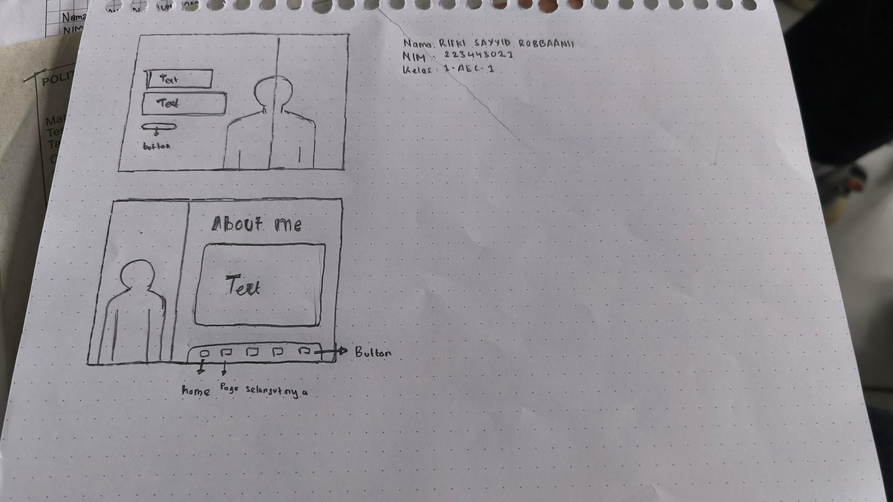

Membuat Tampilan UI/UX Website

Pada tugas ini kita harus membuat sebuah gambaran kasar atau perancangan mengenai website yang akan dibuat untuk
pengumpulan tugas. Ada 2 gambaran kasar yang dibuat, yaitu pada halaman landing page dan juga halaman pengumpulan tugas.
UI/UX sendiri merupakan singkatan dari User Interface (UI) dan User Experience (UX), yang merujuk pada dua aspek penting dalam desain produk, terutama dalam konteks perangkat lunak (software) dan aplikasi.